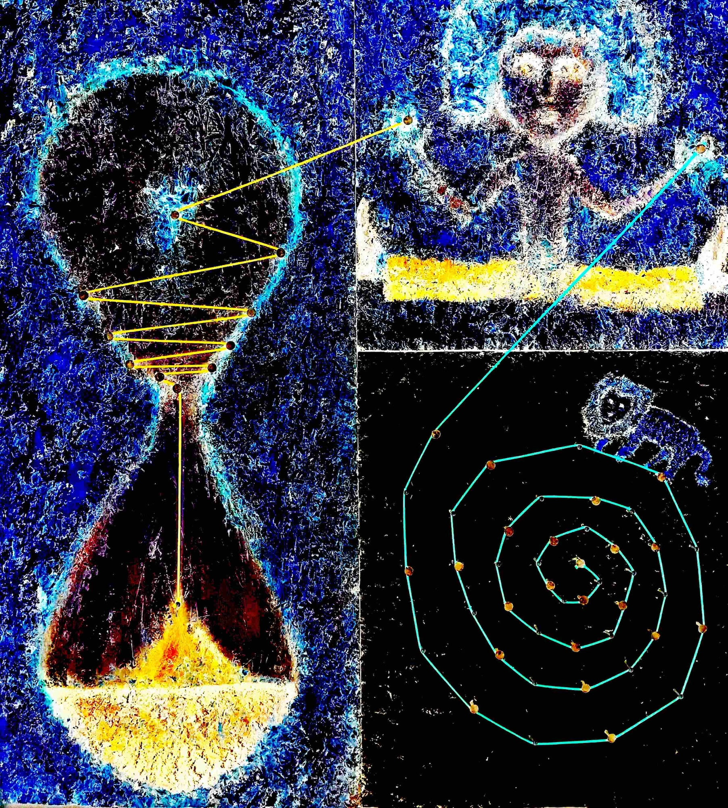

Vom Göttlichen zu sprechen, ist mir peinlich. Es ist aufgesetzt, denn ich denke nicht oft daran. Es wäre erzwungen und entgegen dem Göttlichen. Denn das Göttliche ist von sich aus und hat nicht die Form, die ich mir denke.
Hat es denn überhaupt eine Form? Ist das Göttliche?
Diese Fragen haben mich nie beschäftigt.
Vielleicht, weil ich zu wenig gelitten habe. Vielleicht weil ich zu flach oder tief bin.
Ich habe zwar gelitten, aber vielleicht an der falschen Stelle.
Wenn einer die Wahrheit spricht und darunter leidet, so leidet er gut.
Wenn denn einer seinem Schicksal ausweicht und darunter leidet, so leidet er schlecht.
Kann man an der falschen Stelle leiden?
Oder ist es eben mein Schicksal, den Heldenweg nicht zu gehen? Wohin haben unsere Helden uns denn geführt?
Wie erbärmlich. Ich verschleiere meine Mutlosigkeit mit einer höheren Form des Heldenhaften.
Was liegt mir am Leben?
So viel weiß ich (oder will ich wissen): Einen schöpferischen Weg muss ich gehen*.
Aber wie denn, da mir das Göttliche so wenig bedeutet?
Wie peinlich, im 21. Jahrhundert als junger Mann, dem alles in die Wiege gelegt wurde, vom Göttlichen zu sprechen.
Oder auch ein bisschen cool? Glauben kann ich nicht.
Das Göttliche brauche ich, damit es nicht um mich geht, denn es geht nicht um mich.
Das Göttliche brauche ich, damit ich nicht zu spät bin, damit nicht alles noch vor mir liegt.
Das Göttliche für seine Zwecke brauchen? Das Göttliche brauchen, damit es Zwecke nicht mehr gibt.
*„einen schöpferische Weg muss ich gehen.“ Diese Aussage beschämt mich. Aber was, wenn es so ist? Kann ich es bescheidener und cooler formulieren? Nein. Genau so will ich es belassen.
